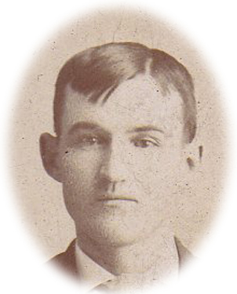
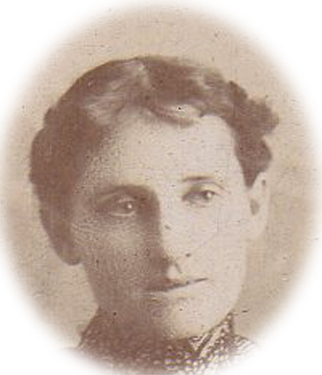

While John and Rosemary Lived in the House


Boys’ Roomand the
Daughters’ Room(as show on the architect’s Second Floor Plan) were presumably well occupied.
One of their granddaughters (one of the six children of John and Rosemary’s daughter Kathleen Moonan Fitzgerald) Kate Fitgerald Terrien (born in 1914) shares her recollections from visiting the house from about 1927 to 1935:

The house was big and elegant. The property in back had a big orchard and extended back to the Castors’ house on the other side of the block. . . . The main entrance, with double doors, faced the street, but was not used much. The stoop outside, by the driveway and the sun room entrance to the house, had a concrete slab so that people could get out of a carriage or car and directly enter the house; after dropping off passengers the carriage could be driven to the barn in the back. Later, probably early 1920’s, they had an automobile. Grandma (Rosemary) had a maid named Pauline, who also drove the car; the two drove to Rochester when Grandma had her cancer treatments at the Mayo Clinic; they stayed at our house before she died. . . .There was a large sofa facing the big fireplace in the living room. Grandpa (John) would lie on the couch for a nap after lunch before going back to the office. . . . Grandma (Rosemary) was a disciplinarian but never mean. She had reasons to discipline: For example, my brother Pat got into her car and released the brake, sending her car down the driveway intoa tree. Also, during play in 1930’s, we kids would pull the cushions of the sofa. One time when Sheila was about four (and had already broken her collar bones four times), she was wearing a large wooden T-brace on her back as support for a broken collar bone, and someone (probably a brother) was chasing her around the first floor. She tripped on a cushion and re-broke her collar bone. . . . Grown-ups sat at the dining room table for meals, and a special table was put up nearby where children sat. . . . There usually was a bridge game going on in the sun room, any windows – the brightest room in the house . . . . The library was fascinating, with books to the ceiling . . . . The narrow back stairway from the kitchen to the second floor, for the maid’s use, was a neat thing for kids. . . . There was a sleeping porch upstairs over the driveway where we kids slept. I remember looking down, at a young age, from the balcony outside the sleeping porch (may through slats) and seeing the car below. . . . There were window seats on the landing of stairs from the first to the second floor. . . . Grandma’s bedroom on the second floor had an entry area that had a settee and lots of piles of newspapers and magazines and embroidered pillows. . . . The third floor was only used for storage.Kathleen Wedding

John Moonan dies suddenly of a heart attack on November 23, 1922. Rosemary lived at the house until her death in Rochester, while visiting her daughter Kathleen, on July 31, 1935.